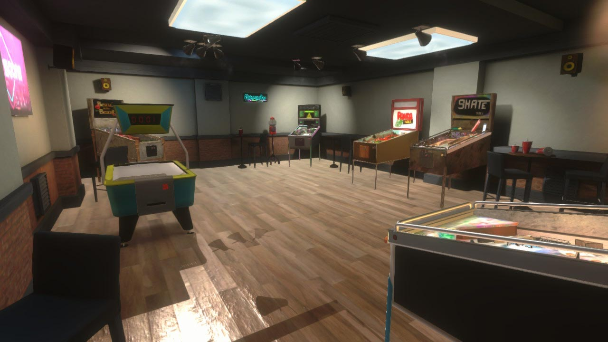
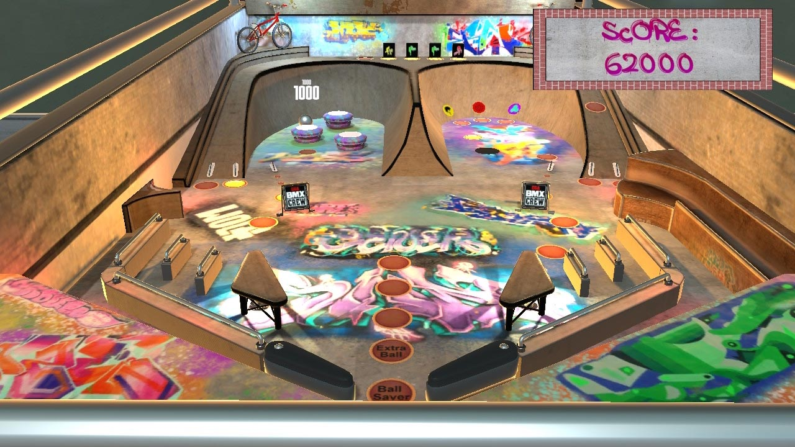
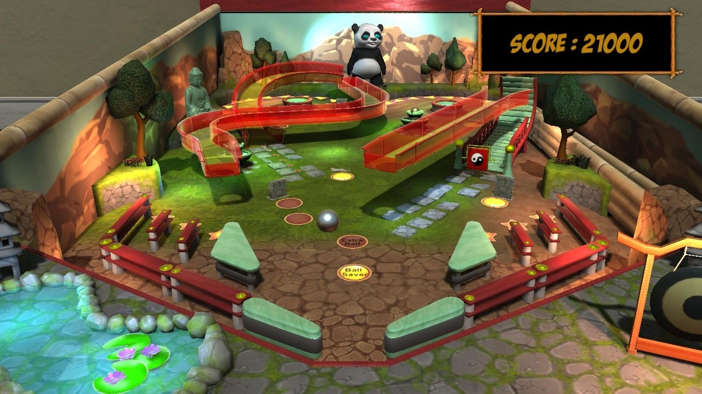
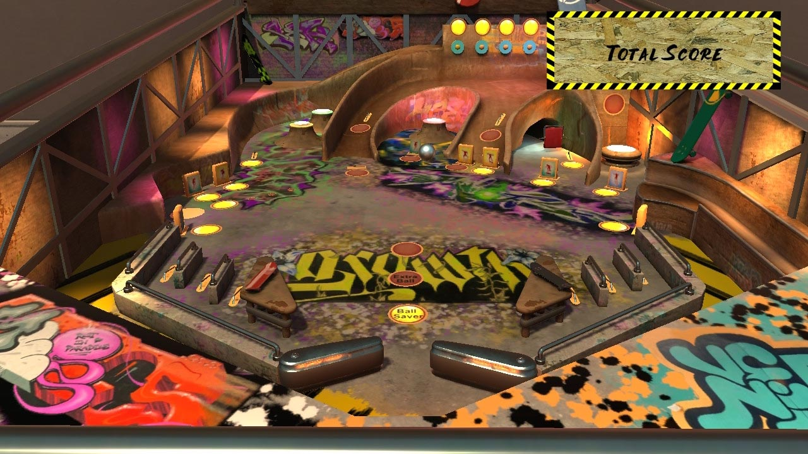
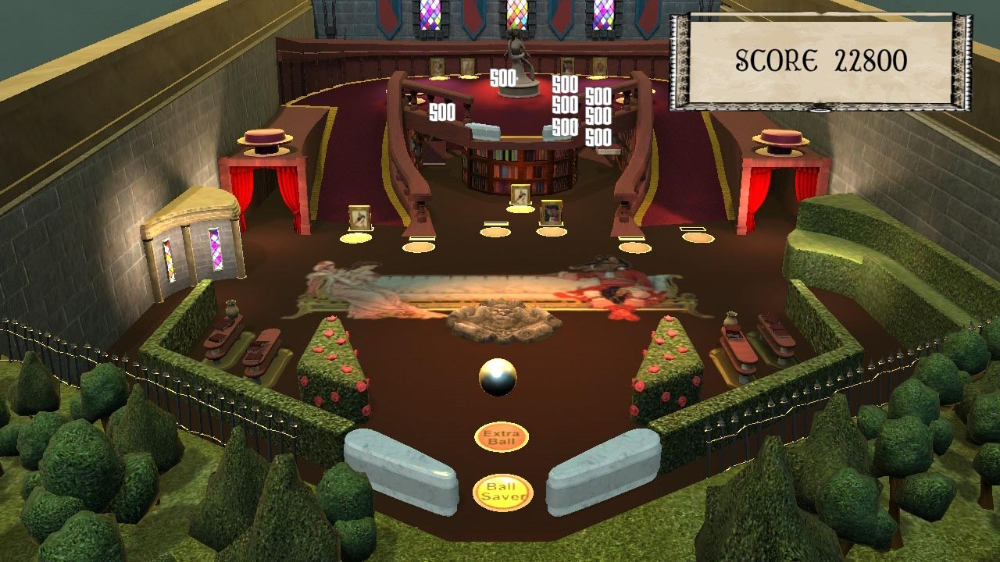
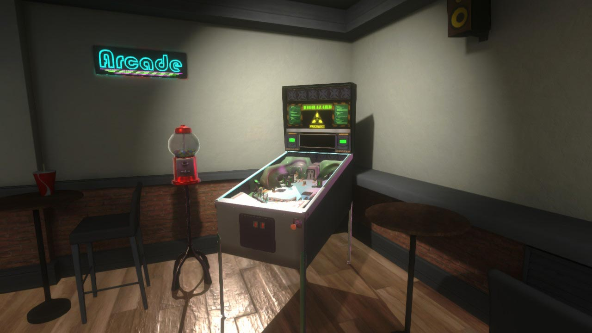

Pinball Lockdown / Freedom
Overview
Worked on Pinball Lockdown and Pinball Freedom during my earlier time at CGA, contributing to a range of core and platform-facing systems.
Key Contributions
- Developed UI management and scene management functionality.
- Implemented settings including display, audio and language options.
- Worked on input handling and input rebinding.
- Implemented localisation support.
- Developed online leaderboards using PlayFab and platform SDKs.
- Worked with Steamworks and Nintendo platform functionality.





